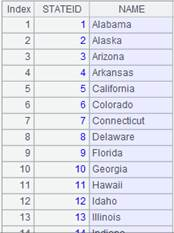
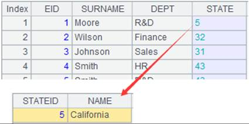
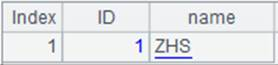
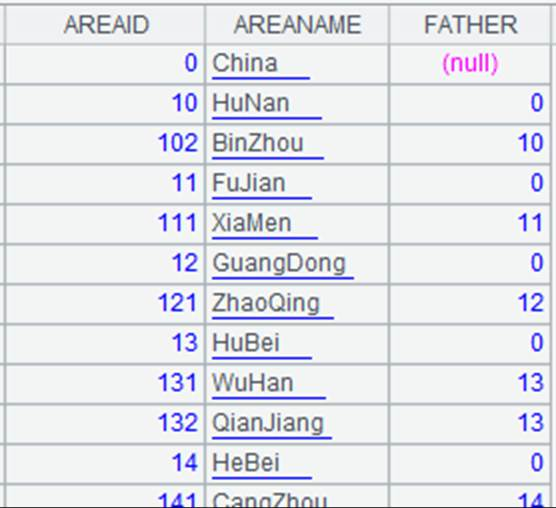
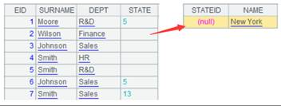

Description:
Switch the values of a reference field in a channel between the corresponding primary key values and the referenced records, or, sometimes switch between them in a reverse direction.
Syntax:
ch.switch(Fi,Ai:x;…)
Note:
Based on a channel, the function enables Fi to switch between the corresponding primary key values and the referenced records of Ai; the key values refer to the primary key values of the referenced records in Ai. This is an attached computation.
Parameters:
|
ch |
Channel |
|
Fi |
The reference field of A. When Ai:x;… is omitted, Fi stores the records of the referenced table Ai . They can be replaced by Ai’s primary key values through the function. |
|
Fi, Ai |
When Ai is available, Fi is the reference field of A, which stores corresponding primary key values. The function is used to switch them to the referenced records in Ai.The matching condition is that Fi is equal to the primary key value of Ai. |
|
Fi, Ai:x |
When both Ai and x are available, get the first record from Ai in which value x is equal to Fi and make it the value of Fi field. |
Options:
|
@i |
If no value corresponding to F is found, then remove this record. |
|
@d |
Perform the inverse operation of @i, which obtains the records that have no value corresponding to F. |
|
@1 |
If the F field value of a record in channel ch doesn’t exist in Ai , then generate a record of the same structure as Ai with expression x being the primay key |
Return value:
Channel
Example:
|
|
A |
|
|
1 |
=demo.cursor("select EID,SURNAME,DEPT,STATE from EMPLOYEE") |
|
|
2 |
=demo.query("select STATEID,NAME from STATES").keys(STATEID) |
 |
|
3 |
=channel() |
Create a channel |
|
4 |
=A1.push(A3) |
Push data in A1’s cursor into A3’s channel |
|
5 |
=A3.switch(STATE,A2:NAME) |
Get the first record in A2’s table where NAME field value is equal to STATE field value and use is as the referencing record to replace the corresponding STATE value in the channel; the key value after switching is the referencing field’s primary key, i.e. STATEID |
|
6 |
=A5.fetch() |
Attach ch.fetch() function that gets the final result set to A3’s channel to fetch and store the existing data in the channel |
|
7 |
=A1.fetch() |
Fetch data from A1’s cursor |
|
8 |
=A3.result() |
 Convert values of "STATE" field in A1 to the corresponding records in A2 |
|
=demo.cursor("select EID,SURNAME,DEPT,STATE from EMPLOYEE where EID<20") |
Return a cursor |
|
|
10 |
=demo.query("select STATEID,NAME from STATES where STATEID<15").keys(NAME) |
Return a table sequence whose primary key is NAME
|
|
11 |
=channel(A9) |
Create a cursor in the channel and be ready to push A9’s cursor records into the channel |
|
12 |
=A11.switch(STATE,A10) |
Use A10’s primary key with parameter x being absent; the post-switch key is NAME |
|
13 |
=A12.fetch() |
|
|
14 |
=A9.skip() |
|
|
15 |
=A11.result() |
 |
|
16 |
=demo.cursor("select EID,SURNAME,DEPT,STATE from EMPLOYEE where EID<20") |
|
|
17 |
=demo.query("select STATEID,NAME from STATES where STATEID<15").keys(NAME) |
Same as A10 |
|
18 |
=channel() |
Create a channel |
|
19 |
=A18.switch@i(STATE,A17) |
With @i option, delete a record that can’t match any STATE value in A17’s table sequence |
|
20 |
=A18.fetch() |
|
|
21 |
=A16.push(A18) |
Push data in A16’s cursor to the channel |
|
22 |
=A18.result() |
Get result set from the channel  |
|
23 |
=demo.cursor("select EID,SURNAME,DEPT,STATE from EMPLOYEE where EID<20") |
|
|
24 |
=demo.query("select STATEID,NAME from STATES where STATEID<15").keys(STATEID) |
Same as A2 |
|
25 |
=channel() |
Create a channel |
|
26 |
=A25.switch@1(STATE,A24:NAME) |
Find from A24’s table seqeunce the first record where the NAME (the key) value is the same as STATE (the key) value, use it as the reference record to replace the STATE value in the channel; the new key value after the replacement is the reference record’s primary key – STATEID. If there isn’t a matching STATEID, generate a record of the same structure as A24 and set primay key as NAME |
|
27 |
=A25.fetch() |
|
|
28 |
=A23.push(A25) |
Push data in A23’s cursor into the channel |
|
29 |
=A25.result() |
Fetch data from the channel  |